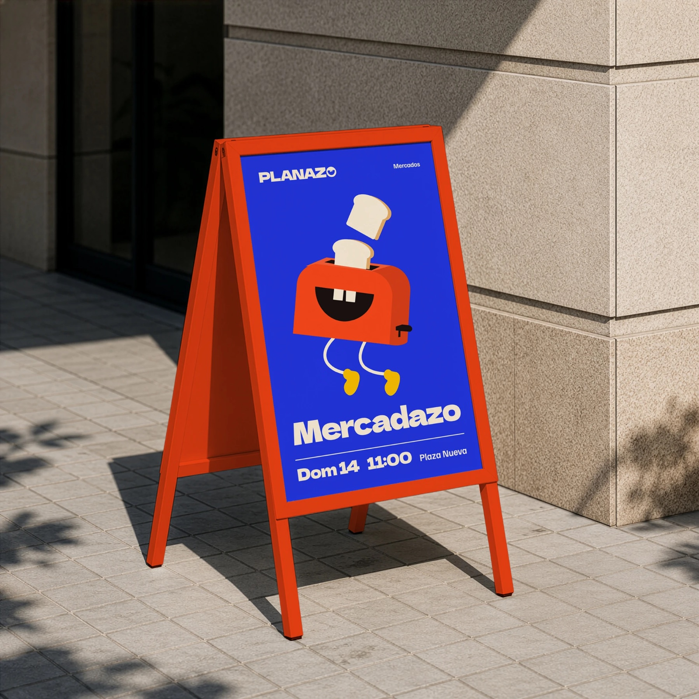
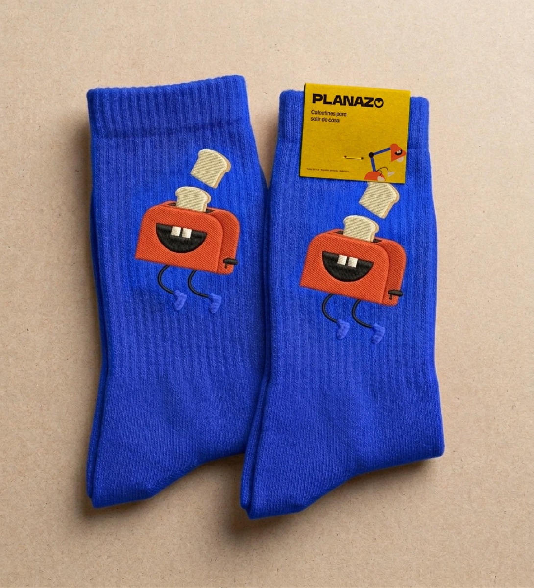
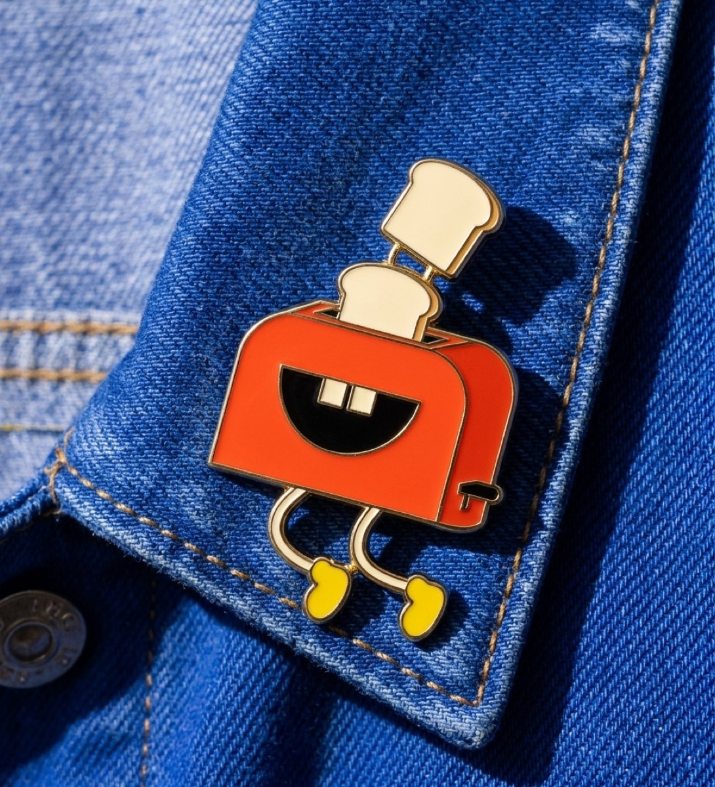
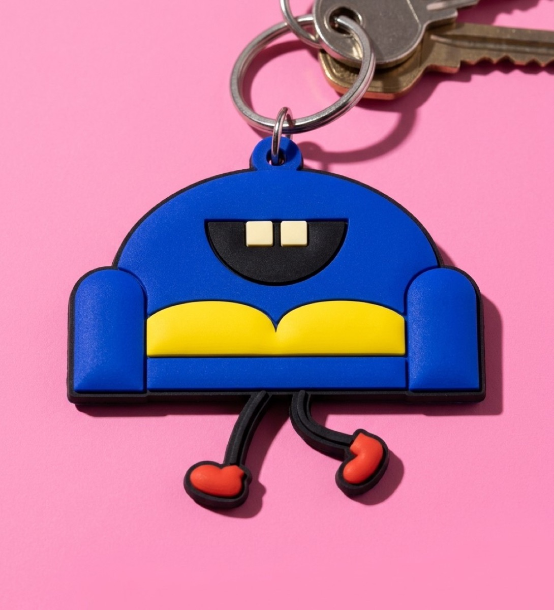
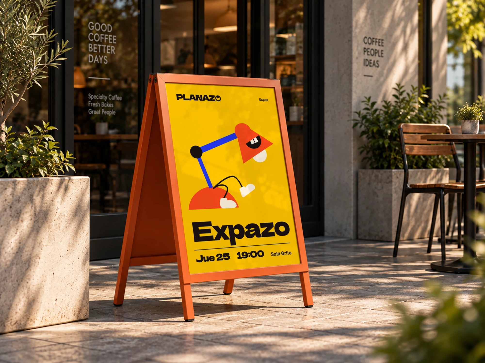
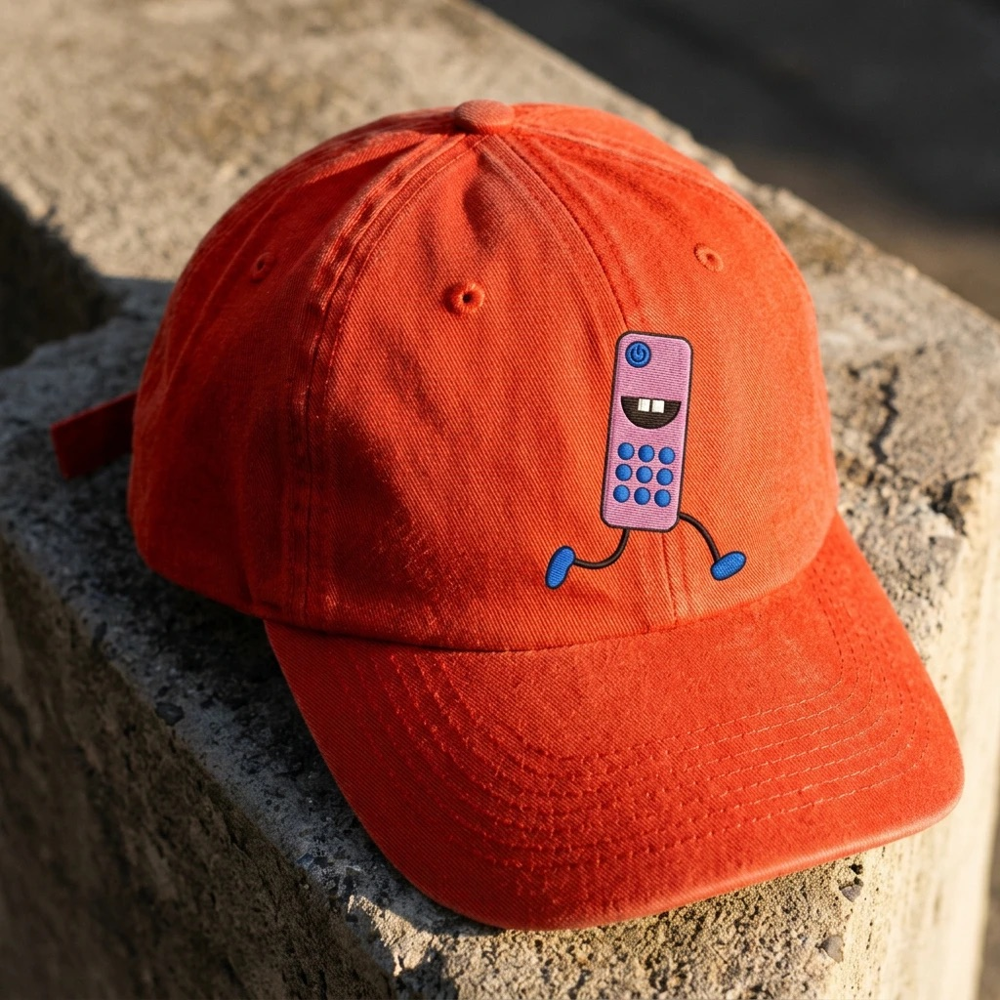

ProyectosPLANAZO
Identidad visual · Ilustración
PLANAZO
PLANAZO reúne planes para el tiempo libre: conciertos, mercados, paseos y exposiciones. Su idea es sencilla: los objetos de casa ya salen más que tú.
Contexto y objetivos
Contexto
Muchas tardes acaban en el sofá por pura inercia. PLANAZO propone lo contrario: una agenda de planes cerca de casa, contada con humor y sin tono de folleto.
Hasta tu sofá sale más que tú.
Objetivos
Una marca alegre y cercana, para adultos, sin caer en lo infantil.
Personajes que funcionen solos, juntos y en movimiento.
Un sistema fácil de aplicar a carteles, merch y redes.
Mi papel
- Dirección de arte
- Identidad visual
- Ilustración y motion
Concepto, logotipo, paleta, personajes, animaciones, carteles, merch y textos de la marca.
Galería
Lo de quedarse en casa ya lo has probado.
Planes cerca de casa para quienes nunca saben decir que no a otro plan.
Conciertazo
Vie 13 · 21:00 · La Nave
Mañana tengo cosas. Mañana.
No lo necesito. Pero mira qué bonito.
Era un paseo corto, dijeron.
Muy interesante. Yo lo habría colgado más alto.
Proceso creativo
La idea parte de una imagen: los objetos de casa, hartos de vernos tirados, se van de plan sin nosotros. Así nacen los Bocazas: un sofá, una tostadora, un mando y un flexo.
Cada uno tiene su tipo de plan y su color, pero todos comparten el mismo gesto: una boca con dos paletas. Ese gesto también se cuela en el logotipo, donde la O sonríe.
Las ilustraciones son planas, con pocas formas y piernas finas de dibujo animado. Están pensadas para reconocerse de lejos y funcionar igual de bien bordadas, impresas o animadas.
Pero los Bocazas no solo tienen aspecto propio: también tienen carácter. El Sofá nunca sabe cuándo irse a casa, la Tostadora sale sin lista y vuelve con media tienda, el Mando no conoce los paseos cortos y el Flexo siempre tiene algo que puntualizar.






Resultado final
Una identidad de colores vivos que se apoya en cuatro personajes. Cada uno representa un tipo de plan y todos funcionan en carteles, merch, redes y animación, con una forma de hablar propia que se reconoce incluso sin ver el logo.